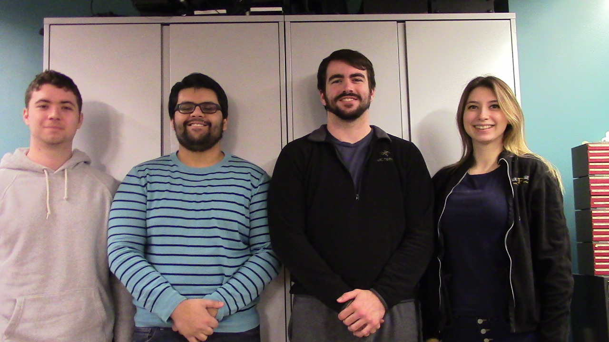
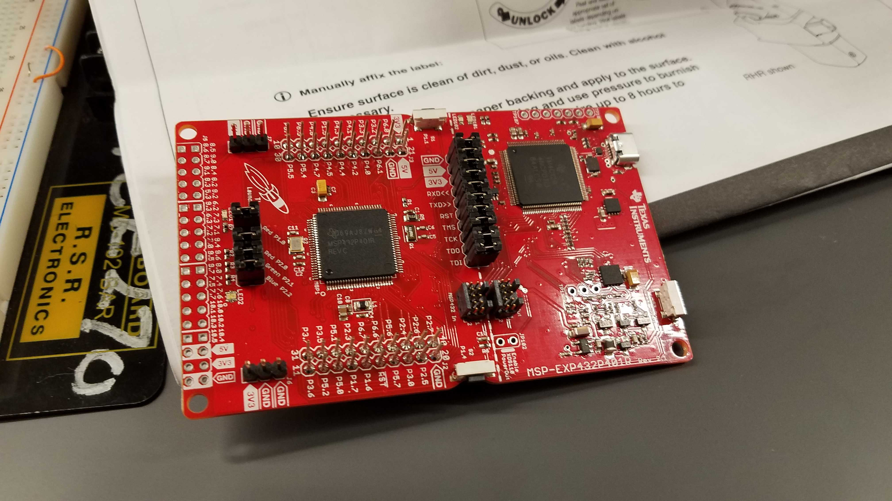
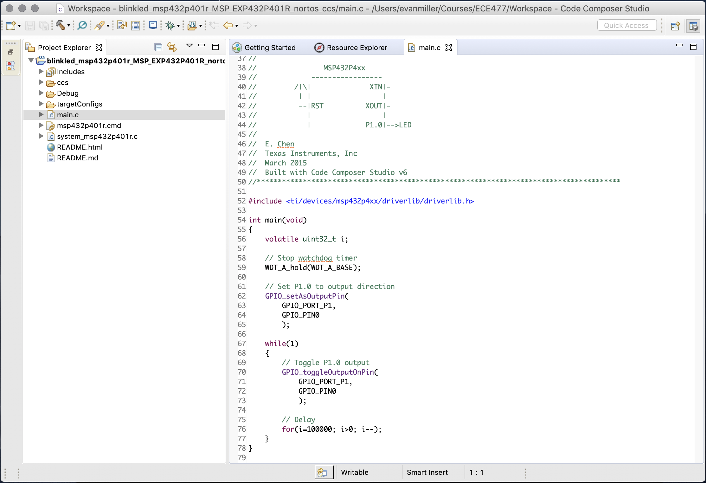
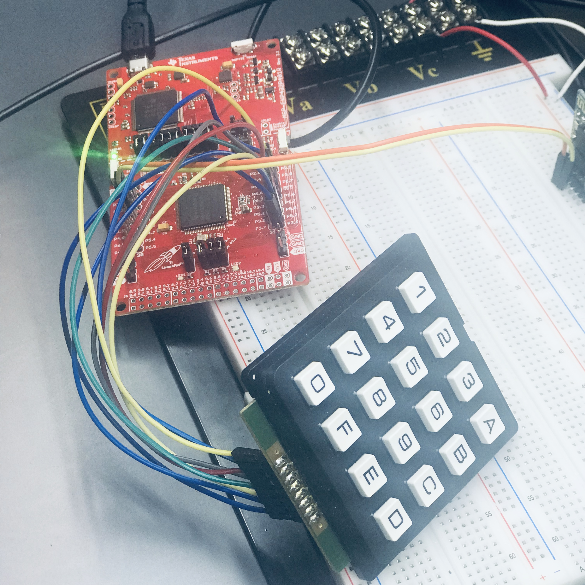
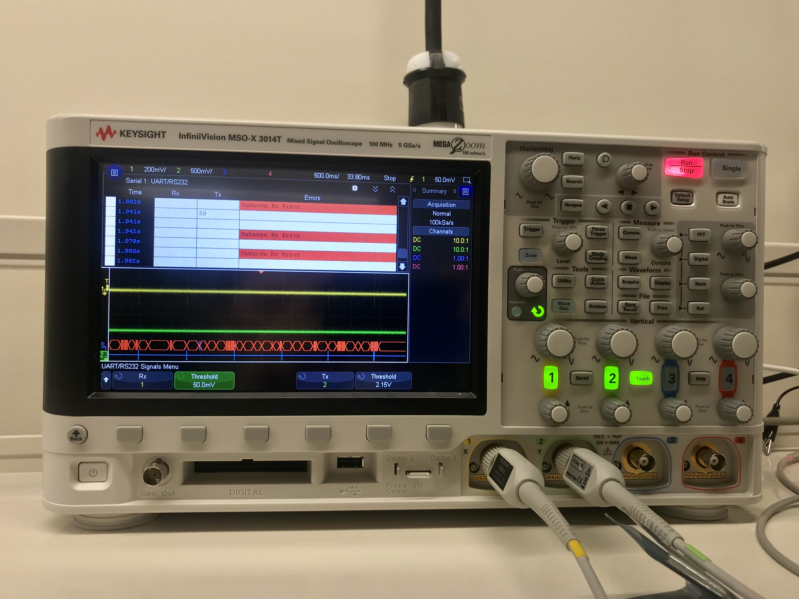

 Figure 1.1: Team Photo
Week 1:
Date: January 11, 2019
Total hours: 8
Description of Design Effors:
Worked on the Final Project proposal and setting up meeting times based on everyone's schedule.
Developed a preliminary budget and researched microcontrollers, breakout boards, and sensors the project will use.
 Figure 2.1: Devboard MSP432
Week 2:
Date: January 14, 2019
Total hours: 9
Description of Design Effors:
Working on setting up the development environment for the MSP432 microcontroller and documenting the process to do so.
Created a high level diagram with Ian outlining the main components and protocols for our project.
Changed the Admin password and made sure all team documents are organized on our shared drive.
 Figure 3.1: Code Snippet Screenshot
Week 3:
Date: January 25, 2019
Total hours: 12
Description of Design Effors:
Spent the first part of the week working on reasearching components for our Component Analysis assignment, specifically
our microcontroller and single board computer (Raspberry Pi). Worked with Viktoryia on an initial state transition
diagram for our microcontroller software required for the Software Overview assignment. Also worked with Viktoryia on
setting up the TI SDK and was able to run a code snippet to blink an on-board LED. Lastly, read over comments from our
last submission and made changes where needed.
 Figure 4.1: Devboard and Numpad Interfacing
Week 4:
Date: Febuary 1st, 2019
Total hours: 9
Description of Design Effors:
This week I was responsible for the electrical overview assignment and spent a majority of my time looking at datasheets
and determining power requirements and standard protocols (UART, BLE). I was able to find a peripheral guide for our microcontroller that defines the Interrupt
Service Routines and other useful constants and funtions.
There was a specific example for configuring UART that we will use as a starting point.
Next, I plan on reviewing feedback on last weeks document and making changes based on TA feedback as well
as customizing some of the example code for the microcontroller.
 Figure 5.1: UART Debugging Waves
Week 5:
Date: Febuary 8th, 2019
Total hours: 9
Description of Design Effors:
This week I spent time researching packaging information for products similar to our project. There is a comparable Ring Doorbell that differes in function but
has an enclosure similar to our CAD design.
I worked with Viktoryia to set up a driver for the alphanumeric keypad. After that, we turned our focus to configuring the MSP432 for UART. Although
the microcontroller supports UART, it it still rather tricky to setup and debug. Using the Keysight InfiniiVision MSO-X 3014T
Oscilliscope, I was able to track down the sample transfer data sent out by the microcontroller. The picture shwows the waveforms
on the oscilliscope, with the bottom blue lines indicating a byte transfer. The red error lines were for the receiving end of
UART which were not considered during this test setup.
Next week I plan on testing the receiving side of UART on our microcontroller and try and configure the HC-05 bluetooth module
for our targeted 9600 baud rate. If that is tested and working, we can start communicating with the Raspberry Pi and begin fleshing out our system.